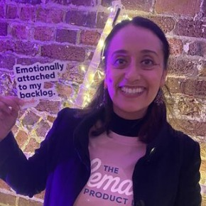

Open to Lead, Senior and Product Manager roles · contract or permanent · LondonSenior Product Leader for digital transformation, platforms and apps
I have 10+ years' experience turning complex business problems into scalable digital products, from large-scale publishing platforms and mobile apps to internal tools and automation, using AI for rapid prototyping and building Claude skills to accelerate and improve product processes. I've worked across scale-ups and major UK media organisations, partnering with business and technical teams from discovery through to delivery.
Let's talk
Case studies
Fusion Fit: AI prototype for bespoke outfits
My capstone project: an AI prototype that turns scattered outfit inspiration into a designer-ready brief, then matches people with designers who can make it.
Open +Close −
Finding a designer 2.0 / 5 easeConcept useful 10 of 11Built with AI Studio & Stitch
The challenge
People commissioning a bespoke outfit collect ideas from Pinterest, Instagram, screenshots and WhatsApp, and want to combine details from several outfits. Turning that into something a designer can work from is hard, and finding the right designer is harder.
What I did
- Ran discovery through public Reddit threads and a questionnaire, then reframed the problem from "fusion weddings" to anyone commissioning a bespoke outfit when the data showed finding a designer was the bigger pain.
- Wrote the PRD with every claim labelled as evidenced, hypothesis or open gap.
- Experimented with Claude, Gemini, Perplexity and ChatGPT to create PRDs, using Claude skills, Gemini Gems and custom GPTs.
- Compared Vercel v0 and Google AI Studio for prototyping, and chose AI Studio. Designed the UI in Stitch and built the working prototype in AI Studio.
- Built my own agentic team of AI agents (PM, CTO, UX Lead and Evals Lead) plus Claude skills to stress-test decisions and check every claim before it is used.
- Designed the AI tagging with guardrails: suggestions limited to a fixed style vocabulary, every tag confirmed by the user, no inference of religion or ethnicity, and personal details removed before the model call.
- Kept designer matching simple and transparent: clear rules and a plain-language "why we matched you", with machine learning saved for when there's enough real data.
Early signals (11 responses)
- 8 of 11Scored finding a designer 1 or 2 out of 5
- 9 of 11Want details from several outfits combined
- 10 of 11Rated the concept useful (stated interest, not yet behaviour)
Next
- 30+Survey responses, plus designer interviews and a concierge test with real briefs
- ≥80%Target agreement between AI tags and designer tags, tested on 50 to 100 descriptions
Merchant management: legacy CMS to internal platform
Replaced a legacy CMS and its slow data pipeline so merchant offers go live in minutes, not days.
Open +Close −
Offer go-live 35 min → ~2 minChanges InstantLegacy dependency Removed
The challenge
Merchant offers were managed in a legacy CMS that relied on a batch data pipeline and multiple Google spreadsheets. Every weekly update needed several slow run-and-verify cycles, often spread over two days, which created a risky technical dependency and slowed the commercial team.
What I did
- Defined the four-phase merchant management roadmap, from MVP through HubSpot, process automation and ML-driven ranking, with the dependencies between each phase made explicit.
- Led the MVP that replaced the legacy CMS with an internal platform, using a direct API integration in place of the batch pipeline.
- Added the operational features the team asked for, including spreadsheet-friendly export and US state-restriction handling.
- Kept improving the workflow through continuous feedback from operations.
Outcomes
- ~2 minTo put an offer live, down from about 35 minutes
- InstantOffer changes now visible straight away, with no pipeline wait
- DoneLegacy CMS retired and the platform de-risked (delivered June 2026)
Customer identity and single customer view
Knowing who each customer is across 30+ brands, so they are recognised as one person, not several separate leads.
Open +Close −
Brands 30+Identity match in POC 99.9%
The challenge
Across 30+ brands, the business couldn't tell who its customers were. The same person signing up on two brands was treated as two separate leads, so CRM sent them the same content twice. With no persistent identity, there was also no reliable way to connect a first visit to a conversion, and attribution was split across tracking, CRM and third-party systems.
What I did
- Defined the enterprise product strategy for a persistent customer ID that acts as both the attribution anchor and the single customer view record.
- Led discovery workshops with MarTech, CRM, data and engineering teams and wrote the requirements across identity, event tracking, lead management and single customer view.
- Set out confidence tiers for identity matching and how anonymous visitors are stitched to known profiles.
- Shaped a vendor-neutral evaluation of event tracking platforms, backed by a lightweight proof of concept.
- Mapped every internal and external user of the legacy lead platform to define what its replacement must do.
Outcomes so far
- 99.9%Identity match accuracy proven in a proof of concept across 3 sites and multiple users, part of a wider data warehouse project
- NextRoll out one customer identity across 30+ brands and touchpoints
- NextFoundation for multi-touch attribution, personalisation and AI-driven decisions
Commercial operations rebuild in HubSpot
Turning HubSpot from a contact list into the single source of truth for sales, onboarding and merchant data.
Open +Close −
Deal properties in use 3 of 57Sales pipeline 9 → 3 stagesOnboarding 8 → 3 stages
The challenge
HubSpot was configured but barely used, and the team was on the wrong contract for what it needed. The real workflow lived in spreadsheets, forms, Slack and people's heads, so leadership had no reliable pipeline view and Finance and Ops found out about changes late. The audit found:
- Only 3 of 57 custom deal properties in active use.
- 43 of 58 deals stuck in the first onboarding stage, with none in any middle stage.
- 81 merchants grouped under one "Inactive" status, when there were really 8 different states.
- 0% fill rate on ops task briefs and deal-change fields, so changes had no audit trail.
What I did
- Ran an audit of the HubSpot setup alongside discovery workshops and workflow analysis with Commercial leadership.
- Wrote the implementation brief: new sales and onboarding pipelines, structured deal and budget fields, data cleanup and a Slack and email alert matrix.
- Used AI rapid prototyping to turn my PRDs into a working prototype, so Sales, Operations and Finance could try the future-state experience and agree on it, then handed it to engineering to configure in HubSpot.
- Made the business case for upgrading to a HubSpot Enterprise contract, and sequenced the rebuild as the prerequisite for process automation.
Outcomes
- −67%Sales pipeline simplified from 9 stages to 3
- −63%Onboarding process simplified from 8 stages to 3
- DoneWorking prototype agreed with stakeholders and handed to engineering for configuration
- Next100% of new prospects tracked as pipeline deals, >95% of partners with a full record, and one leadership dashboard
Digital asset management with Bynder
Moved brand assets from shared drives to a governed, searchable library across 30+ sub-brands.
Open +Close −
Live Sept 2026Sub-brands 30+Asset discovery 2× faster (projected)
The challenge
After a rebrand and fast growth, a high volume of images and video lived in shared drives. Assets were hard to find, there was no clear view of what was approved, and permissions were too open.
What I did
- Defined the product strategy and business case for an enterprise digital asset management platform.
- Led discovery workshops, vendor demonstrations and executive stakeholder engagement.
- Partnered with Technology, Marketing and business leaders to agree on Bynder, including AI-assisted search.
Outcomes
- LiveTaken from discovery to signed contract and live in September 2026
- 30+Sub-brands on one governed asset library
- ControlBetter governance, approval visibility and findability
Projected benefits (vendor business case)
- 2×Faster asset discovery, saving about 430 hours a year of searching
- +33%Asset reuse, so fewer new assets need to be bought
- LessAdmin time on tagging and uploads, with AI auto-tagging
Offer, deal and budget automation
Consolidating six disconnected tools into one automated flow from signed deal to live offer.
Open +Close −
Ops effort −60–70% targetManual steps 6 removed, 16 automated
The challenge
The same offer and deal data was re-keyed across HubSpot deal and merchant fields, Google Forms, Google Sheets and Slack. Budgets and receivables were tracked in separate spreadsheets, and nobody was told automatically when terms changed or a financial threshold was breached.
What I did
- Ran customer interviews and end-to-end process mapping across Commercial, Operations and Finance.
- Wrote the PRD, mapping six processes step by step: offer creation, drafting, deal changes, budgets, tenancy deals and aged receivables.
- Used Claude to analyse each process and identify repetitive steps, then tagged every step as eliminated, automated, human review or new, so the team could see exactly what changes.
- Designed rule-driven automation: a new commercial deal in HubSpot drafts the offer automatically, budget status is derived automatically, and partner activity pauses and resumes on finance rules.
Targets
- 60–70%Less Operations time on offer management
- 16 of 22Manual steps automated or assisted, and 6 removed entirely
- 6 → 1Disconnected tools consolidated into one platform
- NextLays the data foundation for ML-driven merchant ranking (from 2027)
Curated news apps for The Scotsman and Yorkshire Post
Relaunched a 2.5-star legacy app as a curated editorial app with morning and evening editions, and made it a driver of digital subscriptions.
Open +Close −
Rating 2.5★ → 4.3★DAU +25% in 4 monthsSubscriptions +18%
The challenge
A cluttered, slow app with inconsistent navigation, a clunky paywall with confusing tiers, and no saved articles, topic feeds or targeted notifications to bring readers back each day.
What I did
- Repositioned the app from "nice to have" to a growth channel in the subscription strategy.
- Launched a curated editorial app with automated CMS integration, including morning and evening editions and a "5 things to read" digest.
- Partnered with UX researchers on usage analysis and interviews about engagement, paywall friction and retention.
- Prioritised funnel fixes across onboarding, paywall and account management, including one login across web and app.
- Introduced saved articles, topic feeds and push notifications, and ran an A/B testing programme on onboarding and paywall placement.
- Rolled the same app design and features, including puzzles, out to The Yorkshire Post.
- Kept improving after launch: puzzles, dark mode, podcasts, video and a feedback form.
Outcomes
- 4.3★UK App Store rating from 1.8K ratings, up from 2.5★ for the legacy app
- +25%Daily active users within four months of launch
- +25%Average session time
- +18%Digital subscriptions attributed to the new app funnel
- +20%3-month subscriber retention
Puzzles in the app
Moved crossword, sudoku and word games from print into the app as a daily habit and premium benefit.
Open +Close −
Avg session time 2 → 5–6 minPremium puzzle tiers Launched
The challenge
Puzzles were among readers' most requested features but only existed in print, and the app had little interactive content to bring people back daily.
What I did
- Defined the roadmap and secured buy-in from editorial, engineering and commercial teams.
- Led delivery in agile sprints, including CMS integration for puzzle content.
- Designed mobile-first interfaces with touch controls, hints, timers and progress, and ran user testing on difficulty and layout.
Outcomes
- ~2.5–3×Average engagement time per session across app users, up from about 2 minutes to 5–6 minutes a day
- HabitMore daily return visits, helped by "Puzzle of the Day" notifications
- RevenuePremium puzzle tiers and subscription bundles
- WorkflowCMS integration reduced publishing time
Push notifications platform
One push platform across web and apps, with real-time triggers, preferences and testing.
Open +Close −
Open rates +50%Opt-outs −30%Trial-to-paid +15%
The challenge
Readers missed breaking stories or got them late, generic blasts drove opt-outs, new subscribers dropped off in onboarding and lapsed readers drifted away.
What I did
- Unified push notifications across all brands on web, iOS and Android using OneSignal.
- Built breaking-news alerts triggered manually or automatically by newsroom publishing.
- Added topic preferences and frequency controls readers set themselves.
- Designed onboarding sequences and "we miss you" re-engagement journeys, and A/B tested messaging and timing.
Outcomes
- <30sBreaking news delivery, with a 60% lift in click-through
- +50%Push open rates across news sites
- 2×Open rates for personalised alerts
- −30%Users disabling notifications
- +15%Trial-to-paid conversion from onboarding sequences
- 12%Dormant users re-engaged within 14 days
Affiliate e-commerce hub
Turned scattered shopping articles into one destination across beauty, tech, home, fashion and more.
Open +Close −
Affiliate revenue +40% YoYOrganic traffic +60%Pages/session +34%
The challenge
Recommendations lived in isolated articles, affiliate links were buried, there was no hub for readers to browse, and peaks like Black Friday and Christmas had no single destination.
What I did
- Brought together reader behaviour, analytics and editorial feedback to define the pain points.
- Prioritised category navigation, curated "best of" lists and repeatable seasonal frameworks.
- Worked with editorial on category structure, engineering on flexible CMS templates and commercial on sponsorship that didn't disrupt the experience.
- Iterated on CTAs, link placement, navigation and star ratings, and set up dashboards for editorial and commercial teams.
Outcomes
- +40%Affiliate-driven revenue year on year
- +55%Seasonal affiliate conversions vs the previous year's standalone articles
- +60%Organic search traffic to shopping content
- +34%Pages per session
3 Added Minutes football website
A new football brand for fans who wanted more than match reports, funded by an ad-lite subscription.
Open +Close −
Unique visitors +55%Ad-lite conversion 8–12%
The challenge
No football-only vertical existed. It had to win passionate fans in a crowded market and make an ad-lite subscription feel worth paying for.
What I did
- Ran 20+ interviews and surveys with supporter groups. Fans wanted opinion, gaming and competitions, and named ad clutter as a key frustration.
- Mapped reader and subscription journeys and tested Figma wireframes with fans to refine navigation and subscription messaging.
- Shipped an MVP with content sections, newsletter sign-up, push notifications, club and competition taxonomy and a subscription flow with about 70% fewer ads.
- See the site: 3addedminutes.com
Outcomes
- +55%Unique visitors within 3 months of launch
- 8–12%Loyal readers converted to ad-lite subscriptions
- +25%Dwell time on fan-centric sections vs baseline
- +35%Newsletter subscriptions
Commenting platform
Brought reader conversations back on-site with Viafoura, using its full feature set from subscriber-only threads to a personalised news feed.
Open +Close −
Session duration +35%Renewals +12%
The challenge
Articles had no commenting, so conversations happened on Facebook and Twitter and readers had little reason to return.
What I did
- Led vendor selection, the pilot and rollout across national, regional and vertical titles on web and app.
- Introduced subscriber-only threads with journalist participation and a guest commenting trial.
- Used the full Viafoura feature set: a personalised news feed, follows, alerts and notifications, and Viafoura analytics to track engagement.
Outcomes
- +35%Average session duration
- +20%Repeat visits among registered users
- +12%Subscription renewals where commenting was active
- 8%Anonymous readers converted to registered users
- −50%Moderation workload through AI-powered filtering
Personalised homepages with Dynamic Yield
Replaced a one-size-fits-all homepage with recommendations based on reading history and trends.
Open +Close −
Click-through ↑Articles per visit ↑Sign-ups ↑
The challenge
Every reader saw the same top stories, section pages made relevant articles hard to find, and there was no experimentation across audience segments.
What I did
- Defined the personalisation strategy and led the Dynamic Yield integration into the CMS and templates.
- Segmented readers by recency, frequency and topic interest.
- Tested personalised vs static modules and compared most-popular, collaborative filtering and trending models.
- Rolled out in phases from homepage to section pages to article recommendations.
Outcomes
- CTR ↑Higher click-through on personalised modules than static ones
- Depth ↑Longer sessions and more articles per visit
- Subs ↑More sign-ups when personalised content was paired with offers
- ScaleTemplates reused across new verticals; less manual curation
Video article pages and video hub
Gave newsrooms the tools to publish video and gave readers a place to find it.
Open +Close −
Video hub LaunchedAd formats Pre, mid & post-roll
The challenge
Articles relied on text and images, newsrooms couldn't publish video easily, and there was no central place to browse video.
What I did
- Led market research and defined the video strategy and roadmap.
- Integrated a video CMS and player (Brightcove) and worked with commercial on ad formats and branded content.
- Built video article templates, modules and a video hub, and trained editorial teams.
- A/B tested placement, autoplay vs click-to-play and short vs long form.
Outcomes
- RolloutPhased across the portfolio, including vertical sites
- LegacyThe product has kept evolving and now runs on Dailymotion
Standardised CMS templates and photo articles
One modular template system for news, live, video, photo and e-commerce pages.
Open +Close −
Template variants ↓Page speed ↑Publishing time ↓
The challenge
Each page type had its own layout, workflow and data structure. Editors were slowed down, readers saw inconsistent experiences and every change had to be built several times.
What I did
- Audited every template and ran workshops with editorial, design, ad-tech and SEO teams.
- Defined reusable components such as hero media, galleries, live ticker, product carousel and CTA blocks.
- Led the photo-article format end to end, testing hero vs gallery and caption styles for time on page and scroll depth.
- Managed phased migration, training and feedback with editorial leads.
Outcomes
- SpeedFaster page loads and stronger Core Web Vitals
- OpsFewer variants to maintain and quicker feature releases
- RevenueConsistent ad slots and sponsored modules across formats
- 2012New apps for national and regional titles
- 2013Redesign of desktop regional websites: launch and rollout complete
- 2016Responsive websites and app launches
- 2017Football apps for Sunderland, Sheffield, Yorkshire, Blackpool, Peterborough, Portsmouth and Edinburgh
- 2019iNews app
Experience
-
Current
Director & Product Consultant
iProduct Consulting Limited- Independent product consultancy delivering platform, digital transformation and AI-enabled product work for scale-ups and enterprises.
- Available for contract engagements through the company.
-
Jan 2026 – Sep 2026
Senior Contract Product Manager (via iProduct Consulting)
Quantum Media · award-winning affiliate marketing scale-up in iGaming and other verticals- Led a legacy CMS migration to an internal SaaS platform, so merchant offers go live in about 2 minutes instead of 35.
- Defined the workflow automation strategy (HubSpot and an internal platform) to consolidate six disconnected tools into one platform, targeting a 60–70% reduction in operational effort.
- Defined a customer identity and single customer view strategy across 30+ brands, with 99.9% identity match accuracy proven in a proof of concept.
- Took a Bynder digital asset management business case from discovery to signed contract and go-live in September 2026, across 30+ sub-brands.
- Redesigned HubSpot sales and onboarding pipelines from 9 and 8 stages to 3 each, using AI-powered prototypes to align stakeholders.
-
Apr 2023 – Jan 2025
Head of Product
National World Corporate- Led a team of 5 product managers across 56 websites and 13 apps on a shared CMS.
- Launched a curated editorial app with automated CMS feeds, raising daily active users by 25% in four months.
- Rolled out a CMS curation platform to 10+ regional teams, reducing time to publish by about 30%.
- Launched personalised homepages and behavioural recommendations across editorial and affiliate journeys.
-
Dec 2016 – Apr 2023
Senior Product Manager
JPI Media- Replatformed 141 regional news websites in six months.
- Took the iNews website from concept to launch in four weeks, reaching 14.4M monthly users in its first three months.
- Launched 12 mobile apps with segmented push strategies that brought 3M+ new subscribers in six months.
- Built ROI-driven business cases that secured three strategic partnerships.
-
Jan 2013 – Dec 2016
Product Manager
Johnston Press- Introduced personalisation and A/B testing across 13 news sites, raising click-through by 30%.
- Delivered a GDPR-compliant account and login platform for 100+ publications, enabling subscriptions.
- Launched The Scotsman app, 11 football apps and live blogging tools.
-
Dec 2010 – Dec 2012
Product Owner
European Directories- Built an ROI reporting portal across seven European operating companies.
- Replaced a legacy sales tool with an automated Omniture batch operations platform.
-
Apr 2008 – Nov 2010
Business Analyst
QCDA- Delivered the National Database of Accredited Qualifications for England, Wales and Northern Ireland, and a web-based accreditation system.
-
Aug 2006 – Apr 2008
Performance Analyst
Audit Commission- Built web-based tools for councils to benchmark service performance and value for money.
-
Jul 2005 – Aug 2006
Business Analyst
Transport for London- Delivered a dashboard that automated performance reporting across operations, finance, technology and corporate functions.
Skills
Strategy & leadership
- Product strategy & roadmapping
- Digital transformation
- Business cases & ROI
- Executive & stakeholder alignment
- Team leadership (team of 5 PMs)
- Mentoring & coaching
- Vendor selection & evaluation
- Market & competitive analysis
- Go-to-market
- Prioritisation
- Roadmap sequencing & dependencies
Discovery & delivery
- User research & interviews
- Customer journey & process mapping
- User personas
- Discovery workshops
- Wireframing & prototyping
- PRDs & requirements
- A/B testing & experimentation
- KPIs & dashboards
- Heatmap & analytics review
- Phased rollouts & migrations
- Agile & Scrum
- UX & UI principles
Platforms & domains
- CMS & content platforms
- Platform migration & replatforming
- Mobile apps (iOS & Android)
- Personalisation & recommendations
- Push notifications & CRM journeys
- Subscriptions, paywalls & ad-lite models
- Affiliate & e-commerce
- Customer identity, CDP & attribution
- Workflow automation
- Digital asset management
- Community & commenting
- Video
- SEO & discoverability
- GDPR-compliant registration
AI & tools
- AI-powered rapid prototyping
- Agentic AI teams
- AI guardrails & evals
- Google AI Studio
- Stitch
- Vercel v0
- Gemini & Gems
- ChatGPT custom GPTs
- Perplexity
- Claude
- Claude skills
- Figma
- Figma Make
- Lovable
- n8n
- HubSpot
- OneSignal
- Viafoura
- Bynder
- Brightcove
- Jira
- Confluence
Education & learning
- AI Product Management Bootcamp & Certification, Maven Ongoing
- AI Ethics, University of Cambridge 2026
- Product Leadership, Roman Pichler 2023
- Professional Scrum Master I, Scrum.org 2017
- UX and Interactive Design, Webcredible 2014
- ITIL V3 Foundation 2011
- BSc (Hons) Computer Information Systems Design, Kingston University 2005
Mentoring
I'm happy to mentor anyone in product, whether you're just starting out or stepping up into leadership.
I have 10+ years of product management experience driving growth and retention across B2C and B2B publishing, affiliate commerce and subscription businesses. I've led the development of scalable digital products across web, mobile and CMS platforms, and I've managed a team of product managers.
As a mentor, I enjoy helping product managers develop their product thinking, leadership skills and confidence to accelerate their careers.
How I can help
Career progression
- Moving from Associate PM to PM, Senior PM, Group PM and Director
- Spotting capability gaps for promotion
- Development plans and growth milestones
- Building your leadership identity
Breaking into product
- Moving into product from another career
- Identifying your transferable skills
- Building a portfolio without product experience
- Preparing for first PM interviews
CVs and job search
- Product CVs that quantify impact
- Optimising for applicant tracking systems
- LinkedIn, recruiters and target companies
- Interview preparation and salary negotiation
Product craft
- Discovery, user research and customer interviews
- Experiments and hypothesis testing
- Outcome-based roadmaps and prioritisation (RICE, MoSCoW)
- Metrics and product analytics
Strategy and vision
- Creating and communicating a product vision
- Connecting product strategy to business outcomes
- Competitive and market analysis
- Portfolio strategy and long-term planning
Leadership and stakeholders
- Influencing executives and building alignment
- Leading through influence and managing teams
- Coaching and mentoring others
- Confidence, resilience and imposter syndrome
About
I'm most interested in where product, technology and AI meet: turning complex business problems into clear strategies, prioritised roadmaps and practical solutions teams can deliver.
I'm a senior product leader with 10+ years' experience delivering digital products, platforms and transformation programmes across publishing, media and technology.
I started my career in business analysis before moving into product management in 2013, progressing from Product Manager to Senior Product Manager and Head of Product, where I led a team of 5 product managers. I've led large-scale initiatives spanning web and mobile platforms, personalisation, customer engagement, internal tooling, workflow automation and operational transformation.
That includes migrating 141 websites onto a new platform, launching curated news apps for The Scotsman and Yorkshire Post, and building personalised experiences across web and apps. More recently at Quantum, an award-winning affiliate marketing scale-up in iGaming, I've worked on internal platforms for merchant management, customer identity, commercial operations, workflow automation and digital asset management, using AI for rapid prototyping and building Claude skills to accelerate and improve product processes.
I'm a Product Mentor at Intelligent People and volunteer with Female Product Lead. I'm currently taking the AI Product Management Bootcamp on Maven, taught by product and AI leaders from Google, Meta and Anthropic, and I keep building my skills through hands-on projects in AI workflows, prototyping and evaluation.
Let's talk
Through iProduct Consulting Limited
Directly with me